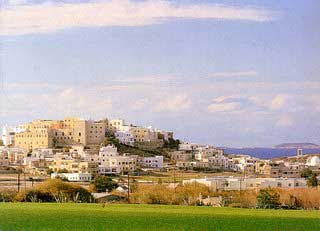

Το κάστρο του Σανούδου στη Χώρα της Νάξου
 Το κάστρο χτίστηκε γύρω στο 1207 από τον ενετό Μάρκο Β΄ Σανούδο, ιδρυτή του Δουκάτου της Νάξου. Το ιδιόρρυθμο αμυντικό του σύστημα, που σχηματίζονταν από τους εξωτερικούς τοίχους των σπιτιών της πόλης, με δυο πύλες και δώδεκα περιμετρικούς πύργους, δεν παρείχε μεγάλη προστασία. Έτσι αναγκάζονταν συχνά να συμβιβάζονται με τους επιδρομείς και να καταβάλουν βαριά φορολογία, όπως συνέβη και με τον πειρατή Μπαρμπαρόσα (1538). Ο σωζόμενος πύργος των Crispi ανήκει σήμερα στην Αρχαιολογική Υπηρεσία (δωρεά Πέτρου Γλέζου), η οποία έχει ξεκινήσει εργασίες αναστήλωσής του, προκειμένου να στεγαστεί εκεί το πρώτο βυζαντινό μουσείο των Κυκλάδων. | ||